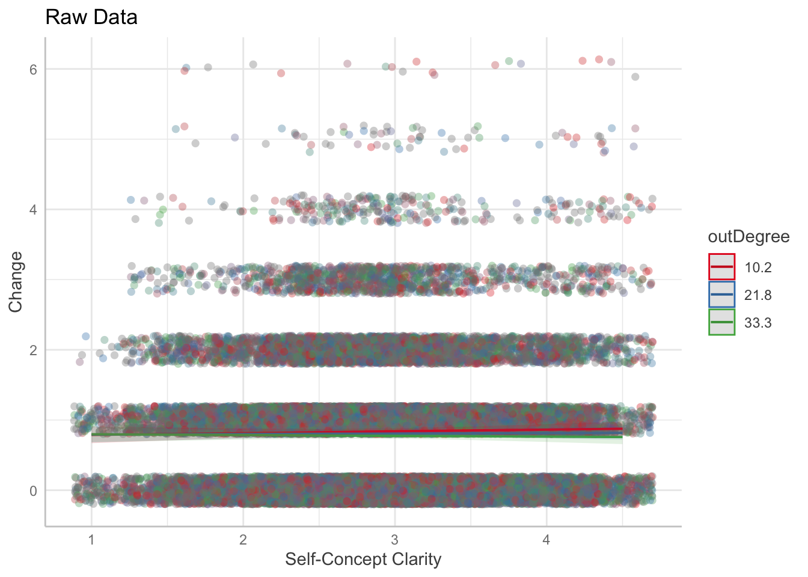
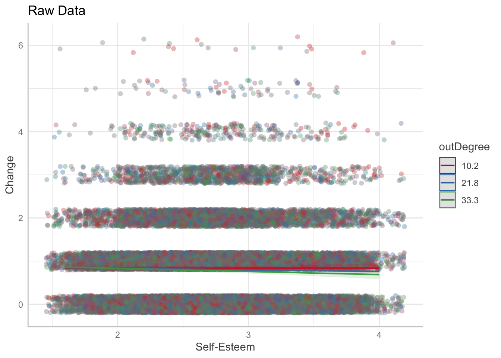
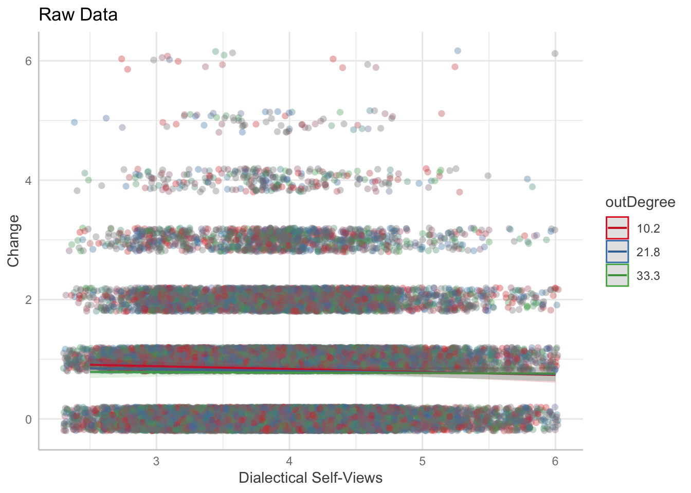
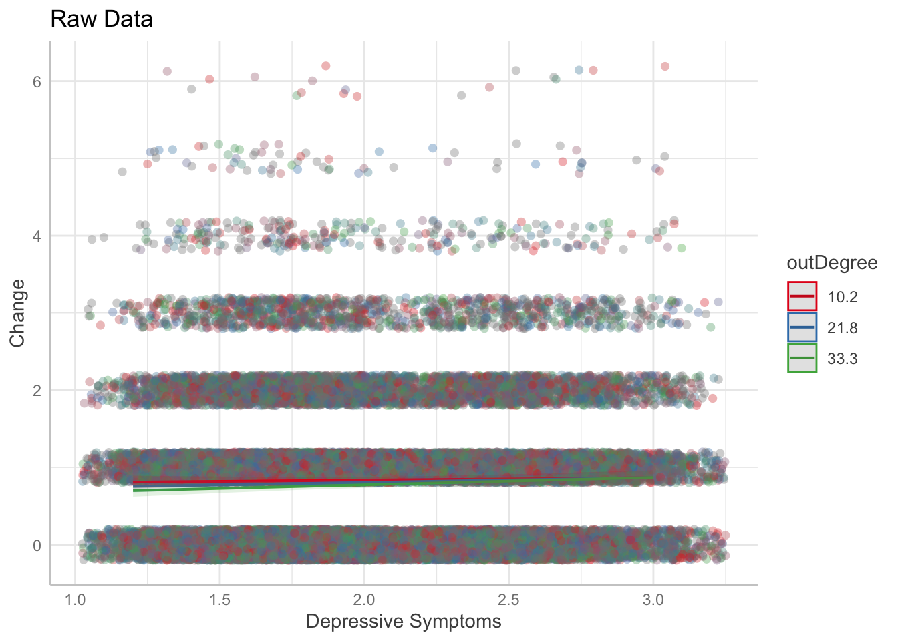
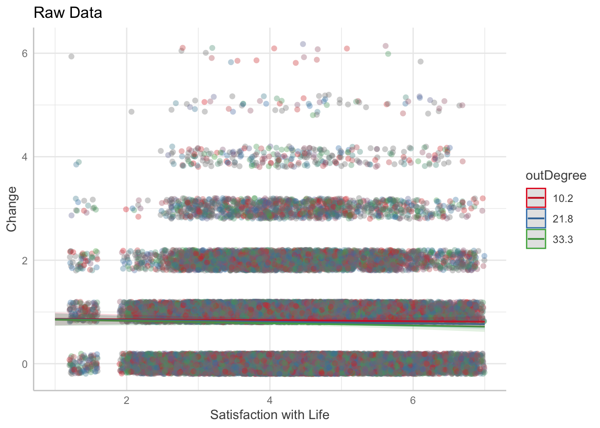
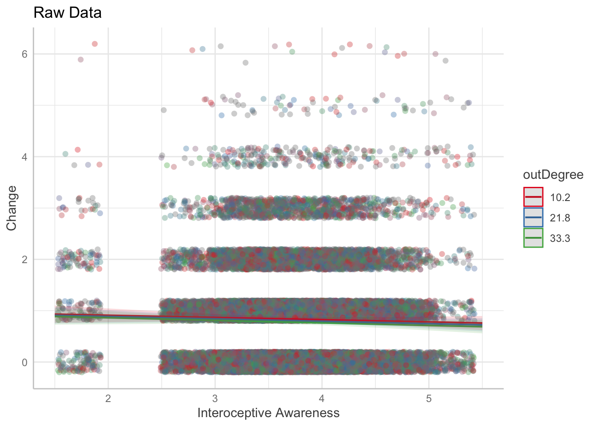
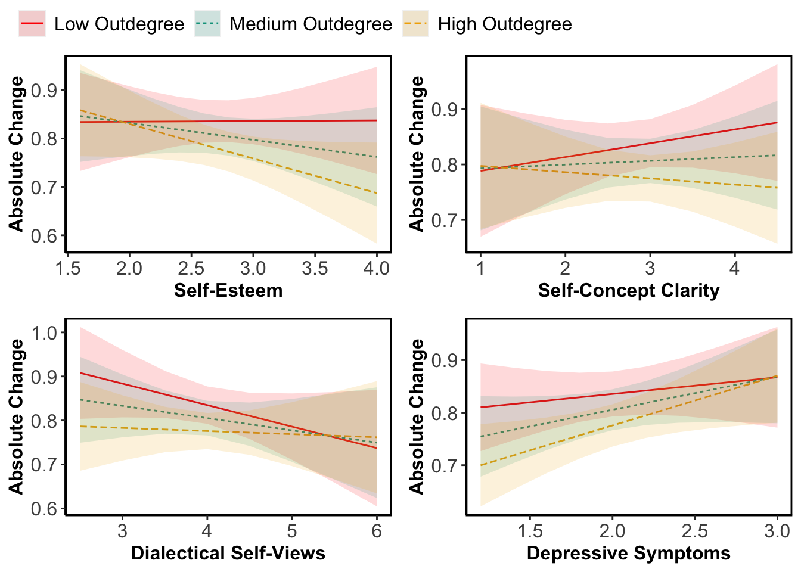

library(groundhog)
pkgs <- c("lmerTest", "ggeffects","r2glmm", "tidyverse","here", "sjPlot", "ggpubr", "wesanderson", "effectsize")
groundhog.day <- '2022-07-25'
groundhog.library(pkgs, groundhog.day)
here::i_am("analysis/finalStableAnalyses.qmd")
plotDir <- "/Volumes/Research Project/Trait_TestRetest/WeekTRT/plots/"finalAnalyses
Set-Up
Import Data
fullLong <- as.data.frame( arrow::read_parquet(here("data/longChangeInds.parquet")) )
ICCmat <- as.data.frame( arrow::read_parquet(here("data/ICCdf.parquet")) )Scaling
fullLong$absDS.Z <- scale(fullLong$absDS)
fullLong$diffScore.Z <- scale(fullLong$diffScore)
fullLong$selfRespT1.Z <- scale(fullLong$selfRespT1)
fullLong$selfRespT2.Z <- scale(fullLong$selfRespT2)
fullLong$outDegree.Z <- scale(fullLong$outDegree)
fullLong$inDegree.Z <- scale(fullLong$inDegree)
fullLong$SE_C.Z <- scale(fullLong$SE_C)
fullLong$SCC_C.Z <- scale(fullLong$SCC_C)
fullLong$DS_C.Z <- scale(fullLong$DS_C)
fullLong$CESD_C.Z <- scale(fullLong$CESD_C)
fullLong$SWLS_C.Z <- scale(fullLong$SWLS_C)
fullLong$MAIA.All_C.Z <- scale(fullLong$MAIA.All_C)More Dependent Self-Beliefs Are Less Reliable
m <- lm(scale(ICCr2z) ~ scale(outDegree) + scale(inDegree) + valence, data = ICCmat)
eta_squared(m)# Effect Size for ANOVA (Type I)
Parameter | Eta2 (partial) | 95% CI
------------------------------------------------
scale(outDegree) | 3.30e-03 | [0.00, 1.00]
scale(inDegree) | 0.02 | [0.00, 1.00]
valence | 1.15e-03 | [0.00, 1.00]
- One-sided CIs: upper bound fixed at [1.00].tab_model(m, collapse.ci = T, show.stat=T, show.r2 = T, show.se = T, string.pred = c("Fixed Effects"), string.est = "Coef.", string.se = "SE", string.stat = "t", digits = 3, emph.p = F, dv.labels = "Reliability", show.df=T)| Reliability | |||||
|---|---|---|---|---|---|
| Fixed Effects | Coef. | SE | t | p | df |
| (Intercept) | 0.034 (-0.127 – 0.194) |
0.082 | 0.411 | 0.681 | 292.000 |
| outDegree | -0.033 (-0.148 – 0.083) |
0.059 | -0.556 | 0.579 | 292.000 |
| inDegree | -0.152 (-0.267 – -0.037) |
0.059 | -2.593 | 0.010 | 292.000 |
| valence [positive] | -0.067 (-0.294 – 0.160) |
0.115 | -0.581 | 0.562 | 292.000 |
| Observations | 296 | ||||
| R2 / R2 adjusted | 0.026 / 0.016 | ||||
Self-Beliefs with More Implications Change Less
m<-lmer(absDS.Z ~ outDegree.Z + valence + inDegree.Z + ( valence + outDegree.Z + inDegree.Z |subID) + (1 | traits), data = fullLong, control=lmerControl(optimizer="bobyqa",
optCtrl=list(maxfun=2e5)))boundary (singular) fit: see help('isSingular')r2beta(m) Effect Rsq upper.CL lower.CL
1 Model 0.001 0.002 0.001
2 outDegree.Z 0.001 0.002 0.000
4 inDegree.Z 0.000 0.000 0.000
3 valencepositive 0.000 0.000 0.000tab_model(m, collapse.ci = T, show.stat=T, show.r2 = T, show.se = T, string.pred = c("Fixed Effects"), string.est = "Coef.", string.se = "SE", string.stat = "t", digits = 3, emph.p = F, dv.labels = "Confidence", df.method = "satterthwaite",show.df=T)| Confidence | |||||
|---|---|---|---|---|---|
| Fixed Effects | Coef. | SE | t | p | df |
| (Intercept) | 0.006 (-0.045 – 0.058) |
0.026 | 0.247 | 0.805 | 141.164 |
| outDegree Z | -0.033 (-0.050 – -0.016) |
0.009 | -3.787 | <0.001 | 252.429 |
| valence [positive] | -0.013 (-0.059 – 0.033) |
0.024 | -0.552 | 0.581 | 185.666 |
| inDegree Z | -0.010 (-0.027 – 0.007) |
0.009 | -1.144 | 0.254 | 235.067 |
| Random Effects | |||||
| σ2 | 0.93 | ||||
| τ00 traits | 0.01 | ||||
| τ00 subID | 0.06 | ||||
| τ11 subID.valencepositive | 0.03 | ||||
| τ11 subID.outDegree.Z | 0.00 | ||||
| τ11 subID.inDegree.Z | 0.00 | ||||
| ρ01 subID.valencepositive | -0.42 | ||||
| ρ01 subID.outDegree.Z | -0.14 | ||||
| ρ01 subID.inDegree.Z | 0.23 | ||||
| N subID | 114 | ||||
| N traits | 296 | ||||
| Observations | 33731 | ||||
| Marginal R2 / Conditional R2 | 0.001 / NA | ||||
cor(ICCmat[c("ICCr2z","absDS","cor","outDegree","inDegree")]) ICCr2z absDS cor outDegree inDegree
ICCr2z 1.00000000 0.15028541 0.9985854 -0.05677553 -0.1560765
absDS 0.15028541 1.00000000 0.1508695 0.01219183 -0.0645310
cor 0.99858539 0.15086947 1.0000000 -0.06073260 -0.1566267
outDegree -0.05677553 0.01219183 -0.0607326 1.00000000 0.1693412
inDegree -0.15607648 -0.06453100 -0.1566267 0.16934122 1.0000000Individual Differences in Self-Concept Stability as a Function of Outdegree
Self-Concept Clarity
m<-lmer( absDS.Z ~ SCC_C.Z*outDegree.Z + ( outDegree.Z | subID ) + ( SCC_C.Z | traits), data=fullLong, control=lmerControl(optimizer="bobyqa",
optCtrl=list(maxfun=2e5)))
rb <- r2beta(m)
data.frame(rb$Effect,rb$Rsq) rb.Effect rb.Rsq
1 Model 1.445609e-03
2 outDegree.Z 1.205068e-03
3 SCC_C.Z:outDegree.Z 2.106537e-04
4 SCC_C.Z 3.027464e-05tab_model(m, collapse.ci = T, show.stat=T, show.r2 = T, show.se = T, string.pred = c("Fixed Effects"), string.est = "Coef.", string.se = "SE", string.stat = "t", digits = 3, emph.p = F, dv.labels = "Evaluation", df.method = "satterthwaite",show.df=T)| Evaluation | |||||
|---|---|---|---|---|---|
| Fixed Effects | Coef. | SE | t | p | df |
| (Intercept) | -0.000 (-0.045 – 0.045) |
0.023 | -0.003 | 0.998 | 129.487 |
| SCC C Z | 0.005 (-0.039 – 0.049) |
0.022 | 0.242 | 0.809 | 116.567 |
| outDegree Z | -0.034 (-0.051 – -0.017) |
0.008 | -4.032 | <0.001 | 206.837 |
| SCC C Z * outDegree Z | -0.014 (-0.027 – -0.001) |
0.007 | -2.162 | 0.032 | 128.053 |
| Random Effects | |||||
| σ2 | 0.93 | ||||
| τ00 traits | 0.01 | ||||
| τ00 subID | 0.05 | ||||
| τ11 traits.SCC_C.Z | 0.00 | ||||
| τ11 subID.outDegree.Z | 0.00 | ||||
| ρ01 traits | 0.46 | ||||
| ρ01 subID | -0.24 | ||||
| ICC | 0.07 | ||||
| N subID | 114 | ||||
| N traits | 296 | ||||
| Observations | 33731 | ||||
| Marginal R2 / Conditional R2 | 0.001 / 0.068 | ||||
Plot
m<-lmer( absDS ~ SCC_C*outDegree + ( outDegree | subID ) + ( SCC_C | traits), data= fullLong, control=lmerControl(optimizer="bobyqa",
optCtrl=list(maxfun=2e5)))Warning in checkConv(attr(opt, "derivs"), opt$par, ctrl = control$checkConv, :
Model failed to converge with max|grad| = 0.0109902 (tol = 0.002, component 1)Warning in checkConv(attr(opt, "derivs"), opt$par, ctrl = control$checkConv, : Model is nearly unidentifiable: very large eigenvalue
- Rescale variables?p <- ggpredict(m, c("SCC_C","outDegree"))
SCC.outdeg.Stable.Plot <-ggplot(p, aes(x, predicted)) + geom_line(aes(linetype=group, color=group)) + geom_ribbon(aes(ymin=conf.low, ymax=conf.high, fill=group), alpha=0.15) + scale_linetype_discrete(labels = c("Low Outdegree","Medium Outdegree","High Outdegree")) + scale_color_manual(labels = c("Low Outdegree","Medium Outdegree","High Outdegree"), values = wes_palette("Darjeeling1")) + scale_fill_manual(
labels=c("Low Outdegree","Medium Outdegree","High Outdegree"), values = wes_palette("Darjeeling1")) + theme(
legend.position = c(.2, .7),
legend.justification = c("left", "bottom"),
legend.box.just = "left",
legend.margin = margin(6, 6, 6, 6)
) + theme(axis.text=element_text(size=12),
axis.title=element_text(size=12,face="bold")) + theme(legend.text = element_text(size=12)) + theme(panel.border = element_rect(colour = "black", fill = NA, size =1)) + theme(legend.title = element_blank()) + theme(panel.grid.major = element_blank(), panel.grid.minor = element_blank(),
panel.background = element_blank(), axis.line = element_line(colour = "black")) +
xlab("Self-Concept Clarity") + ylab("Absolute Change")
SCC.outdeg.Stable.Plotggpredict(m, c("SCC_C","outDegree")) %>% plot(add.data=T) + labs(title="Raw Data",x="Self-Concept Clarity",y="Change")
Self-Esteem
m<-lmer( absDS.Z ~ SE_C.Z*outDegree.Z + ( outDegree.Z | subID ) + ( SE_C.Z | traits), data=fullLong, control=lmerControl(optimizer="bobyqa",
optCtrl=list(maxfun=2e5)))
rb <- r2beta(m)
data.frame(rb$Effect,rb$Rsq) rb.Effect rb.Rsq
1 Model 0.0020813527
2 outDegree.Z 0.0012049747
3 SE_C.Z:outDegree.Z 0.0004555649
4 SE_C.Z 0.0004226945tab_model(m, collapse.ci = T, show.stat=T, show.r2 = T, show.se = T, string.pred = c("Fixed Effects"), string.est = "Coef.", string.se = "SE", string.stat = "t", digits = 3, emph.p = F, dv.labels = "Evaluation", df.method = "satterthwaite",show.df=T)| Evaluation | |||||
|---|---|---|---|---|---|
| Fixed Effects | Coef. | SE | t | p | df |
| (Intercept) | -0.000 (-0.045 – 0.045) |
0.023 | -0.003 | 0.998 | 129.596 |
| SE C Z | -0.020 (-0.064 – 0.024) |
0.022 | -0.910 | 0.365 | 115.708 |
| outDegree Z | -0.034 (-0.050 – -0.018) |
0.008 | -4.093 | <0.001 | 204.678 |
| SE C Z * outDegree Z | -0.021 (-0.033 – -0.009) |
0.006 | -3.340 | 0.001 | 118.926 |
| Random Effects | |||||
| σ2 | 0.93 | ||||
| τ00 traits | 0.01 | ||||
| τ00 subID | 0.05 | ||||
| τ11 traits.SE_C.Z | 0.00 | ||||
| τ11 subID.outDegree.Z | 0.00 | ||||
| ρ01 traits | 0.61 | ||||
| ρ01 subID | -0.44 | ||||
| ICC | 0.07 | ||||
| N subID | 114 | ||||
| N traits | 296 | ||||
| Observations | 33731 | ||||
| Marginal R2 / Conditional R2 | 0.002 / 0.068 | ||||
Plot
m<-lmer( absDS ~ SE_C*outDegree + ( outDegree | subID ) + ( SE_C | traits), data= fullLong, control=lmerControl(optimizer="bobyqa",
optCtrl=list(maxfun=2e5)))Warning in checkConv(attr(opt, "derivs"), opt$par, ctrl = control$checkConv, :
Model failed to converge with max|grad| = 0.0748283 (tol = 0.002, component 1)Warning in checkConv(attr(opt, "derivs"), opt$par, ctrl = control$checkConv, : Model is nearly unidentifiable: very large eigenvalue
- Rescale variables?p <- ggpredict(m, c("SE_C","outDegree"))
SE.outdeg.Stable.Plot <-ggplot(p, aes(x, predicted)) + geom_line(aes(linetype=group, color=group)) + geom_ribbon(aes(ymin=conf.low, ymax=conf.high, fill=group), alpha=0.15) + scale_linetype_discrete(labels = c("Low Outdegree","Medium Outdegree","High Outdegree")) + scale_color_manual(labels = c("Low Outdegree","Medium Outdegree","High Outdegree"), values = wes_palette("Darjeeling1")) + scale_fill_manual(
labels=c("Low Outdegree","Medium Outdegree","High Outdegree"), values = wes_palette("Darjeeling1")) + theme(
legend.position = c(.2, .10),
legend.justification = c("left", "bottom"),
legend.box.just = "left",
legend.margin = margin(6, 6, 6, 6)
) + theme(axis.text=element_text(size=12),
axis.title=element_text(size=12,face="bold")) + theme(legend.text = element_text(size=12)) + theme(panel.border = element_rect(colour = "black", fill = NA, size =1)) + theme(legend.title = element_blank()) + theme(panel.grid.major = element_blank(), panel.grid.minor = element_blank(),
panel.background = element_blank(), axis.line = element_line(colour = "black")) +
xlab("Self-Esteem") + ylab("Absolute Change")
SE.outdeg.Stable.Plotggpredict(m, c("SE_C","outDegree")) %>% plot(add.data=T) + labs(title="Raw Data",x="Self-Esteem",y="Change")
Dialectical Self-Views
m<-lmer( absDS.Z ~ DS_C.Z*outDegree.Z + ( outDegree.Z | subID ) + ( DS_C.Z | traits), data=fullLong, control=lmerControl(optimizer="bobyqa",
optCtrl=list(maxfun=2e5)))
rb <- r2beta(m)
data.frame(rb$Effect,rb$Rsq) rb.Effect rb.Rsq
1 Model 0.0018703310
2 outDegree.Z 0.0012053611
3 DS_C.Z 0.0004275102
4 DS_C.Z:outDegree.Z 0.0002391522tab_model(m, collapse.ci = T, show.stat=T, show.r2 = T, show.se = T, string.pred = c("Fixed Effects"), string.est = "Coef.", string.se = "SE", string.stat = "t", digits = 3, emph.p = F, dv.labels = "Evaluation", df.method = "satterthwaite",show.df=T)| Evaluation | |||||
|---|---|---|---|---|---|
| Fixed Effects | Coef. | SE | t | p | df |
| (Intercept) | -0.000 (-0.045 – 0.045) |
0.023 | -0.003 | 0.998 | 129.586 |
| DS C Z | -0.020 (-0.064 – 0.023) |
0.022 | -0.918 | 0.361 | 114.256 |
| outDegree Z | -0.034 (-0.051 – -0.017) |
0.008 | -4.041 | <0.001 | 206.354 |
| DS C Z * outDegree Z | 0.015 (0.003 – 0.027) |
0.006 | 2.462 | 0.015 | 108.447 |
| Random Effects | |||||
| σ2 | 0.93 | ||||
| τ00 traits | 0.01 | ||||
| τ00 subID | 0.05 | ||||
| τ11 traits.DS_C.Z | 0.00 | ||||
| τ11 subID.outDegree.Z | 0.00 | ||||
| ρ01 traits | -0.95 | ||||
| ρ01 subID | -0.21 | ||||
| ICC | 0.07 | ||||
| N subID | 114 | ||||
| N traits | 296 | ||||
| Observations | 33731 | ||||
| Marginal R2 / Conditional R2 | 0.002 / 0.067 | ||||
Plot
m<-lmer( absDS ~ DS_C*outDegree + ( outDegree | subID ) + ( DS_C | traits), data= fullLong, control=lmerControl(optimizer="bobyqa",
optCtrl=list(maxfun=2e5)))Warning in checkConv(attr(opt, "derivs"), opt$par, ctrl = control$checkConv, :
Model failed to converge with max|grad| = 0.00340668 (tol = 0.002, component 1)Warning in checkConv(attr(opt, "derivs"), opt$par, ctrl = control$checkConv, : Model is nearly unidentifiable: very large eigenvalue
- Rescale variables?p <- ggpredict(m, c("DS_C","outDegree"))
DS.outdeg.Stable.Plot <-ggplot(p, aes(x, predicted)) + geom_line(aes(linetype=group, color=group)) + geom_ribbon(aes(ymin=conf.low, ymax=conf.high, fill=group), alpha=0.15) + scale_linetype_discrete(labels = c("Low Outdegree","Medium Outdegree","High Outdegree")) + scale_color_manual(labels = c("Low Outdegree","Medium Outdegree","High Outdegree"), values = wes_palette("Darjeeling1")) + scale_fill_manual(
labels=c("Low Outdegree","Medium Outdegree","High Outdegree"), values = wes_palette("Darjeeling1")) + theme(
legend.position = c(.5, .70),
legend.justification = c("left", "bottom"),
legend.box.just = "left",
legend.margin = margin(6, 6, 6, 6)
) + theme(axis.text=element_text(size=12),
axis.title=element_text(size=12,face="bold")) + theme(legend.text = element_text(size=12)) + theme(panel.border = element_rect(colour = "black", fill = NA, size =1)) + theme(legend.title = element_blank()) + theme(panel.grid.major = element_blank(), panel.grid.minor = element_blank(),
panel.background = element_blank(), axis.line = element_line(colour = "black")) +
xlab("Dialectical Self-Views") + ylab("Absolute Change")
DS.outdeg.Stable.Plotggpredict(m, c("DS_C","outDegree")) %>% plot(add.data=T) + labs(title="Raw Data",x="Dialectical Self-Views",y="Change")
Depressive Symptoms
m<-lmer( absDS.Z ~ CESD_C.Z*outDegree.Z + ( outDegree.Z | subID ) + ( SWLS_C.Z | traits), data=fullLong, control=lmerControl(optimizer="bobyqa",
optCtrl=list(maxfun=2e5)))
rb <- r2beta(m)
data.frame(rb$Effect,rb$Rsq) rb.Effect rb.Rsq
1 Model 0.0027066943
2 outDegree.Z 0.0012364280
3 CESD_C.Z 0.0011764386
4 CESD_C.Z:outDegree.Z 0.0002980858tab_model(m, collapse.ci = T, show.stat=T, show.r2 = T, show.se = T, string.pred = c("Fixed Effects"), string.est = "Coef.", string.se = "SE", string.stat = "t", digits = 3, emph.p = F, dv.labels = "Evaluation", df.method = "satterthwaite",show.df=T)| Evaluation | |||||
|---|---|---|---|---|---|
| Fixed Effects | Coef. | SE | t | p | df |
| (Intercept) | -0.000 (-0.045 – 0.045) |
0.023 | -0.004 | 0.996 | 129.743 |
| CESD C Z | 0.034 (-0.010 – 0.077) |
0.022 | 1.539 | 0.127 | 112.733 |
| outDegree Z | -0.034 (-0.051 – -0.018) |
0.008 | -4.134 | <0.001 | 201.120 |
| CESD C Z * outDegree Z | 0.017 (0.005 – 0.028) |
0.006 | 2.915 | 0.004 | 117.082 |
| Random Effects | |||||
| σ2 | 0.93 | ||||
| τ00 traits | 0.01 | ||||
| τ00 subID | 0.05 | ||||
| τ11 traits.SWLS_C.Z | 0.00 | ||||
| τ11 subID.outDegree.Z | 0.00 | ||||
| ρ01 traits | 0.58 | ||||
| ρ01 subID | -0.40 | ||||
| ICC | 0.06 | ||||
| N subID | 114 | ||||
| N traits | 296 | ||||
| Observations | 33731 | ||||
| Marginal R2 / Conditional R2 | 0.003 / 0.065 | ||||
Plot
m<-lmer( absDS ~ CESD_C*outDegree + ( outDegree | subID ) + ( CESD_C | traits), data= fullLong, control=lmerControl(optimizer="bobyqa",
optCtrl=list(maxfun=2e5)))Warning in checkConv(attr(opt, "derivs"), opt$par, ctrl = control$checkConv, :
Model failed to converge with max|grad| = 0.0367839 (tol = 0.002, component 1)Warning in checkConv(attr(opt, "derivs"), opt$par, ctrl = control$checkConv, : Model is nearly unidentifiable: very large eigenvalue
- Rescale variables?p <- ggpredict(m, c("CESD_C","outDegree"))
CESD.outdeg.Stable.Plot <-ggplot(p, aes(x, predicted)) + geom_line(aes(linetype=group, color=group)) + geom_ribbon(aes(ymin=conf.low, ymax=conf.high, fill=group), alpha=0.15) + scale_linetype_discrete(labels = c("Low Outdegree","Medium Outdegree","High Outdegree")) + scale_color_manual(labels = c("Low Outdegree","Medium Outdegree","High Outdegree"), values = wes_palette("Darjeeling1")) + scale_fill_manual(
labels=c("Low Outdegree","Medium Outdegree","High Outdegree"), values = wes_palette("Darjeeling1")) + theme(
legend.position = c(.55, .10),
legend.justification = c("left", "bottom"),
legend.box.just = "left",
legend.margin = margin(6, 6, 6, 6)
) + theme(axis.text=element_text(size=12),
axis.title=element_text(size=12,face="bold")) + theme(legend.text = element_text(size=12)) + theme(panel.border = element_rect(colour = "black", fill = NA, size =1)) + theme(legend.title = element_blank()) + theme(panel.grid.major = element_blank(), panel.grid.minor = element_blank(),
panel.background = element_blank(), axis.line = element_line(colour = "black")) +
xlab("Depressive Symptoms") + ylab("Absolute Change")
CESD.outdeg.Stable.Plotggpredict(m, c("CESD_C","outDegree")) %>% plot(add.data=T) + labs(title="Raw Data",x="Depressive Symptoms",y="Change")
Satisfaction with Life
m<-lmer( absDS.Z ~ SWLS_C.Z*outDegree.Z + ( outDegree.Z | subID ) + ( SWLS_C.Z | traits), data=fullLong, control=lmerControl(optimizer="bobyqa",
optCtrl=list(maxfun=2e5)))
rb <- r2beta(m)
data.frame(rb$Effect,rb$Rsq) rb.Effect rb.Rsq
1 Model 1.695171e-03
2 outDegree.Z 1.205137e-03
3 SWLS_C.Z 4.180024e-04
4 SWLS_C.Z:outDegree.Z 7.335063e-05tab_model(m, collapse.ci = T, show.stat=T, show.r2 = T, show.se = T, string.pred = c("Fixed Effects"), string.est = "Coef.", string.se = "SE", string.stat = "t", digits = 3, emph.p = F, dv.labels = "Evaluation", df.method = "satterthwaite",show.df=T)| Evaluation | |||||
|---|---|---|---|---|---|
| Fixed Effects | Coef. | SE | t | p | df |
| (Intercept) | -0.000 (-0.045 – 0.045) |
0.023 | -0.003 | 0.998 | 129.578 |
| SWLS C Z | -0.020 (-0.064 – 0.024) |
0.022 | -0.909 | 0.365 | 113.812 |
| outDegree Z | -0.034 (-0.051 – -0.017) |
0.008 | -4.001 | <0.001 | 207.473 |
| SWLS C Z * outDegree Z | -0.008 (-0.021 – 0.004) |
0.006 | -1.356 | 0.178 | 105.970 |
| Random Effects | |||||
| σ2 | 0.93 | ||||
| τ00 traits | 0.01 | ||||
| τ00 subID | 0.05 | ||||
| τ11 traits.SWLS_C.Z | 0.00 | ||||
| τ11 subID.outDegree.Z | 0.00 | ||||
| ρ01 traits | 0.57 | ||||
| ρ01 subID | -0.26 | ||||
| ICC | 0.06 | ||||
| N subID | 114 | ||||
| N traits | 296 | ||||
| Observations | 33731 | ||||
| Marginal R2 / Conditional R2 | 0.002 / 0.066 | ||||
Plot
m<-lmer( absDS ~ SWLS_C*outDegree + ( outDegree | subID ) + ( SWLS_C | traits), data= fullLong, control=lmerControl(optimizer="bobyqa",
optCtrl=list(maxfun=2e5)))Warning in checkConv(attr(opt, "derivs"), opt$par, ctrl = control$checkConv, :
Model failed to converge with max|grad| = 0.0293289 (tol = 0.002, component 1)Warning in checkConv(attr(opt, "derivs"), opt$par, ctrl = control$checkConv, : Model is nearly unidentifiable: very large eigenvalue
- Rescale variables?p <- ggpredict(m, c("SWLS_C","outDegree"))
SWLS.outdeg.Stable.Plot <-ggplot(p, aes(x, predicted)) + geom_line(aes(linetype=group, color=group)) + geom_ribbon(aes(ymin=conf.low, ymax=conf.high, fill=group), alpha=0.15) + scale_linetype_discrete(labels = c("Low Outdegree","Medium Outdegree","High Outdegree")) + scale_color_manual(labels = c("Low Outdegree","Medium Outdegree","High Outdegree"), values = wes_palette("Darjeeling1")) + scale_fill_manual(
labels=c("Low Outdegree","Medium Outdegree","High Outdegree"), values = wes_palette("Darjeeling1")) + theme(
legend.position = c(.2, .10),
legend.justification = c("left", "bottom"),
legend.box.just = "left",
legend.margin = margin(6, 6, 6, 6)
) + theme(axis.text=element_text(size=12),
axis.title=element_text(size=12,face="bold")) + theme(legend.text = element_text(size=12)) + theme(panel.border = element_rect(colour = "black", fill = NA, size =1)) + theme(legend.title = element_blank()) + theme(panel.grid.major = element_blank(), panel.grid.minor = element_blank(),
panel.background = element_blank(), axis.line = element_line(colour = "black")) +
xlab("Satisfaction with Life") + ylab("Absolute Change")
SWLS.outdeg.Stable.Plotggpredict(m, c("SWLS_C","outDegree")) %>% plot(add.data=T) + labs(title="Raw Data",x="Satisfaction with Life",y="Change")
Interoceptive Awareness
m<-lmer( absDS.Z ~ MAIA.All_C.Z*outDegree.Z + ( outDegree.Z | subID ) + ( SWLS_C.Z | traits), data=fullLong, control=lmerControl(optimizer="bobyqa",
optCtrl=list(maxfun=2e5)))
rb <- r2beta(m)
data.frame(rb$Effect,rb$Rsq) rb.Effect rb.Rsq
1 Model 1.968630e-03
2 outDegree.Z 1.099474e-03
3 MAIA.All_C.Z 8.677533e-04
4 MAIA.All_C.Z:outDegree.Z 3.356956e-06tab_model(m, collapse.ci = T, show.stat=T, show.r2 = T, show.se = T, string.pred = c("Fixed Effects"), string.est = "Coef.", string.se = "SE", string.stat = "t", digits = 3, emph.p = F, dv.labels = "Evaluation", df.method = "satterthwaite",show.df=T)| Evaluation | |||||
|---|---|---|---|---|---|
| Fixed Effects | Coef. | SE | t | p | df |
| (Intercept) | 0.000 (-0.045 – 0.045) |
0.023 | 0.005 | 0.996 | 129.619 |
| MAIA All C Z | -0.029 (-0.072 – 0.014) |
0.022 | -1.319 | 0.190 | 112.254 |
| outDegree Z | -0.032 (-0.049 – -0.016) |
0.008 | -3.841 | <0.001 | 200.613 |
| MAIA All C Z * outDegree Z |
-0.002 (-0.013 – 0.010) |
0.006 | -0.303 | 0.762 | 114.406 |
| Random Effects | |||||
| σ2 | 0.93 | ||||
| τ00 traits | 0.01 | ||||
| τ00 subID | 0.05 | ||||
| τ11 traits.SWLS_C.Z | 0.00 | ||||
| τ11 subID.outDegree.Z | 0.00 | ||||
| ρ01 traits | 0.57 | ||||
| ρ01 subID | -0.24 | ||||
| ICC | 0.06 | ||||
| N subID | 114 | ||||
| N traits | 296 | ||||
| Observations | 33731 | ||||
| Marginal R2 / Conditional R2 | 0.002 / 0.065 | ||||
Plot
m<-lmer( absDS ~ MAIA.All_C*outDegree + ( outDegree | subID ) + ( MAIA.All_C | traits), data= fullLong, control=lmerControl(optimizer="bobyqa",
optCtrl=list(maxfun=2e5)))boundary (singular) fit: see help('isSingular')Warning: Model failed to converge with 1 negative eigenvalue: -1.6e+03p <- ggpredict(m, c("MAIA.All_C","outDegree"))
MAIA.All.outdeg.Stable.Plot <-ggplot(p, aes(x, predicted)) + geom_line(aes(linetype=group, color=group)) + geom_ribbon(aes(ymin=conf.low, ymax=conf.high, fill=group), alpha=0.15) + scale_linetype_discrete(labels = c("Low Outdegree","Medium Outdegree","High Outdegree")) + scale_color_manual(labels = c("Low Outdegree","Medium Outdegree","High Outdegree"), values = wes_palette("Darjeeling1")) + scale_fill_manual(
labels=c("Low Outdegree","Medium Outdegree","High Outdegree"), values = wes_palette("Darjeeling1")) + theme(
legend.position = c(.2, .07),
legend.justification = c("left", "bottom"),
legend.box.just = "left",
legend.margin = margin(6, 6, 6, 6)
) + theme(axis.text=element_text(size=12),
axis.title=element_text(size=12,face="bold")) + theme(legend.text = element_text(size=12)) + theme(panel.border = element_rect(colour = "black", fill = NA, size =1)) + theme(legend.title = element_blank()) + theme(panel.grid.major = element_blank(), panel.grid.minor = element_blank(),
panel.background = element_blank(), axis.line = element_line(colour = "black")) +
xlab("Interoceptive Awareness") + ylab("Absolute Change")
MAIA.All.outdeg.Stable.Plotggpredict(m, c("MAIA.All_C","outDegree")) %>% plot(add.data=T) + labs(title="Raw Data",x="Interoceptive Awareness",y="Change")
ggarrange(SE.outdeg.Stable.Plot, SCC.outdeg.Stable.Plot, DS.outdeg.Stable.Plot, CESD.outdeg.Stable.Plot, nrow=2, ncol=2, common.legend = T)
ggsave(paste0(plotDir,"IndDiff.outdegStable",".png"), width = 13, height = 10.5, units = "in")
ggsave(paste0(plotDir,"IndDiff.outdegStable",".tiff"), width = 13, height = 10.5, units = "in")